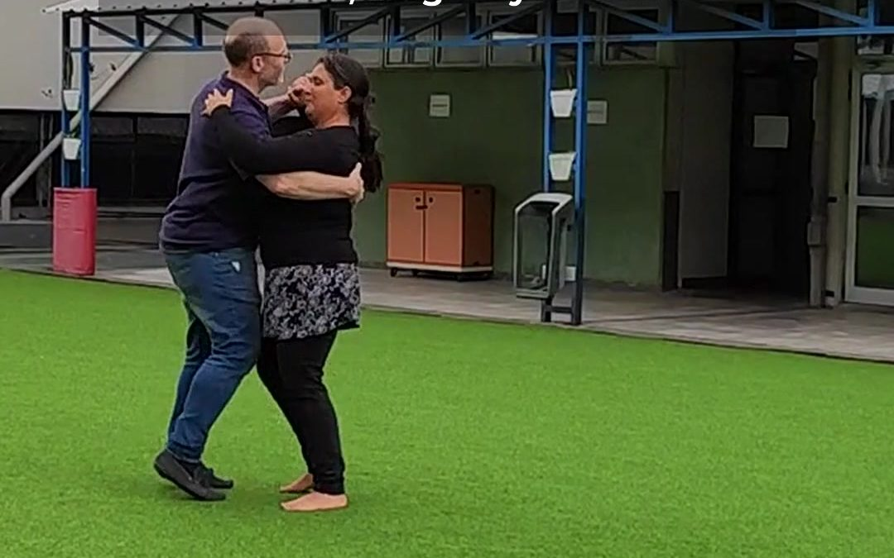

Danza online para alumnos
Una clase por Zoom para avanzar más rápido o trabajar los pasos que te cuestan. Sesiones de una hora y media, los lunes, entre las 8:00 y las 22:30 hora de Buenos Aires.
ARS 10.000 por sesión
Solicitar clases online